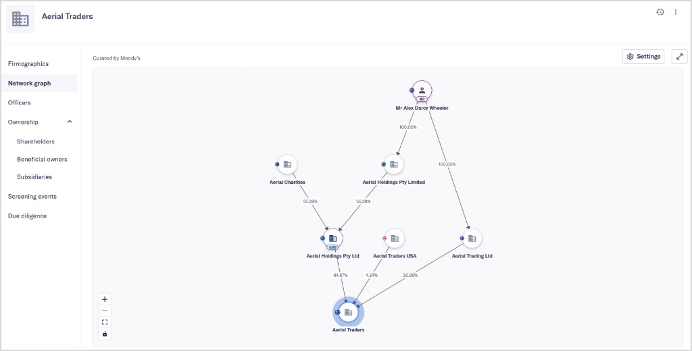

Risk is rarely held by one company. It can sit with the people and businesses around it.
I designed the network graph in Maxsight, alongside parts of the Ownership and Risk Indicators chapters. I wanted users to be able to start with the wider company structure, then follow a connection into the detail that mattered.
The difficult part was making a large network understandable without removing the evidence compliance teams need to investigate it.
This case study uses publicly available product information and simplified descriptions of my contribution. It does not include customer data, proprietary methodology or unreleased product designs.
The challenge
Ownership structures are rarely simple. A company may be linked to many organisations and individuals, with relationships spanning multiple levels of ownership and control.
Users needed to understand who owns or controls an entity, how companies and people are connected, where potential sanctions or financial-crime exposure exists, and which relationships warranted further investigation.
Designing for investigation
The graph was not designed as a visualisation for its own sake. It needed to support a real investigation workflow.
I focused on helping users move between three levels of understanding: network overview → relevant connection → supporting evidence. At a high level, users can understand the shape of an ownership network. From there, they can identify a relationship or flagged connection, then move into detailed information to support an investigation.
Connecting ownership and risk
The Ownership chapter provides the structural context: shareholders, beneficial owners, subsidiaries, and other forms of company control.
Risk Indicators build on that structure by helping users understand potential direct or indirect exposure to sanctioned or financially criminal parties. The design needed to make these layers work together, so users could see not only that risk existed, but how it was connected to the focal company.
Design principles
Start with context — Help users orient themselves within a complex network before asking them to assess individual details.
Reveal complexity gradually — Keep the initial experience understandable while allowing deeper investigation where required.
Connect signals to evidence — Make it clear how a flagged relationship relates to the company and where users can find supporting information.
Outcome
The graph gave users a clearer way to explore ownership structures, trace connections between companies and people, and follow potential risk back to the organisation they were assessing.
My work brought ownership data, network relationships and risk indicators into one investigation flow, helping teams move from a broad view of the network to the supporting evidence behind it.